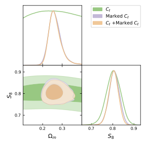
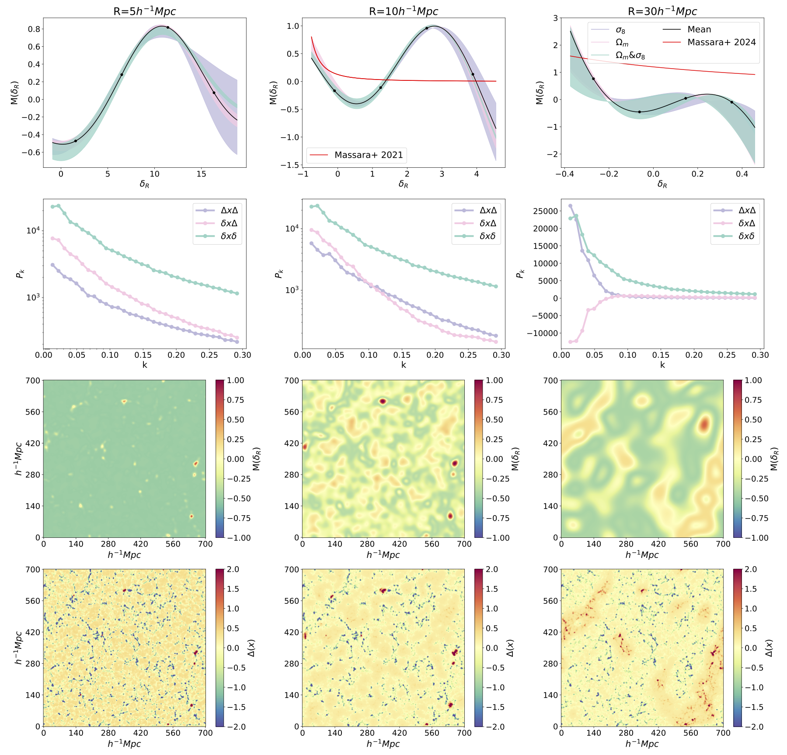
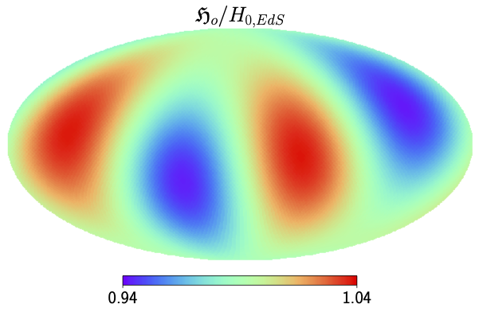

Publications
You can find my first author publications below. A full list of my publications can be found on NASA ADS here.
You can find my first author publications below. A full list of my publications can be found on NASA ADS here.
We present the first application of marked angular power spectra to weak lensing data, using maps from the Subaru Hyper Suprime-Cam Year 1 (HSC-Y1) survey. Marked convergence fields, constructed by weighting the convergence field with non-linear functions of its smoothed version, are designed to encode higher-order information while remaining computationally tractable. Using simulations tailored to the HSC-Y1 data, we test three mark functions that up- or down-weight different density environments. Our results show that combining multiple types of marked auto- and cross-spectra improves constraints on the clustering amplitude parameter S8≡σ8Ωm/0.3−−−−−−√ by ≈ 43\% compared to standard two-point power spectra. When applied to the HSC-Y1 data, this translates into a constraint on S8=0.807±0.024 . We assess the sensitivity of the marked power spectra to systematics, including baryonic effects, intrinsic alignment, photometric redshifts, and multiplicative shear bias. These results demonstrate the promise of marked statistics as a practical and powerful tool for extracting non-Gaussian information from weak lensing surveys
This work is published at Link
 Marked power spectra provide a computationally efficient way to extract non-Gaussian information from the matter density field using the usual analysis tools developed for the power spectrum without the need for explicit calculation of higher-order correlators. In this work, we explore the optimal form of the mark function used for re-weighting the density field, to maximally constrain cosmology. We show that adding to the mark function or multiplying it by a constant leads to no additional information gain, which significantly reduces our search space for optimal marks. We quantify the information gain of this optimal function and compare it against mark functions previously proposed in the literature. We find that we can gain around ∼2 times smaller errors in σ8 and ∼4 times smaller errors in Ωm compared to using the traditional power spectrum alone, an improvement of ∼60 per cent compared to other proposed marks when applied to the same data set.
This work is published at Jessica A Cowell, David Alonso, Jia Liu, Optimizing marked power spectra for cosmology, Monthly Notices of the Royal Astronomical Society, Volume 535, Issue 4, December 2024, Pages 3129–3140,
The assumption of isotropy - that the Universe looks the same in all directions on large scales - is fundamental to the standard cosmological model. It is therefore critical to empirically test in which regimes this assumption holds. Anisotropies in the cosmic expansion are expected due to non-linear structures in the late Universe. However, the extent to which these anisotropies might impact our low-redshift observations remains to be fully tested. We use general relativistic simulations to determine that the expected anisotropies in the Hubble and deceleration parameters are quadrupolar and dipolar, respectively. We constrain these multipoles simultaneously in the new Pantheon+supernova compilation. In the rest frame of the cosmic microwave background (CMB), including peculiar velocity (PV) corrections, we find an ~2σ deviation from isotropy. We constrain the eigenvalues of the quadrupole in the Hubble parameter to be λ1 = 0.021 ± 0.011 and λ2 = 0.00 ± 0.012 and place a 1σ upper limit on its amplitude of 2.88 per cent. We find no significant dipole in the deceleration parameter, with amplitude qdip=4.5+1.9−5.4 . However, in the rest frame of the CMB without PV corrections, we find a >2σ positive amplitude with qdip=9.6+4.0−6.9 . Incorporating these anisotropies, the monopole of the Hubble parameter shifts by only 0.30 km s-1 Mpc-1 with respect to the isotropic constraints.
This work is published at Jessica A Cowell, Suhail Dhawan, Hayley J Macpherson, Potential signature of a quadrupolar hubble expansion in Pantheon+supernovae, Monthly Notices of the Royal Astronomical Society, Volume 526,